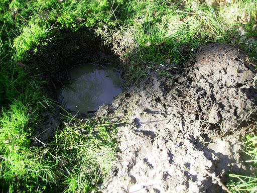
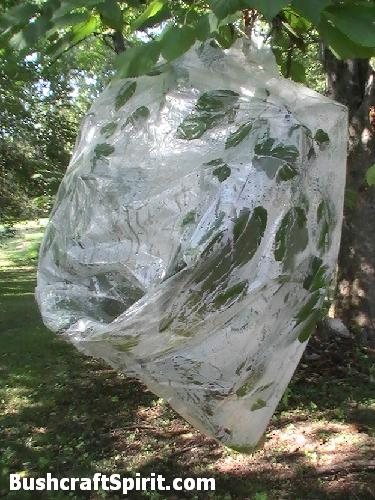
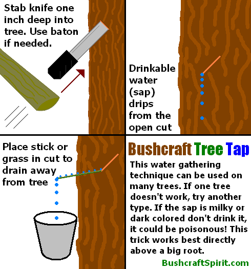
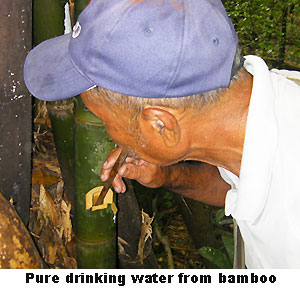
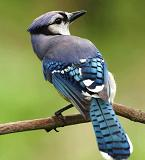
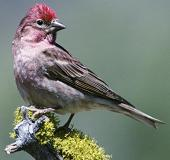
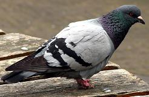
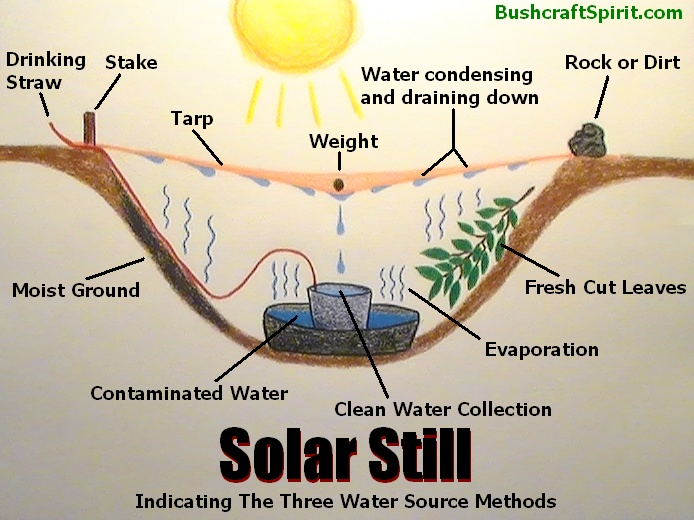

Acquiring water
There are many ways to get water on the property. The easiest way is to just scoop some up from the myriad of ponds. There is also clean drinkable water from the wells on the property, but that will take a bit more effort to acquire because of the depth of the water in the wells.
Gravity
When it comes to finding water, the most obvious place to look is at the lowest elevation of the surrounding area, such as valley bottoms, where it will drain, collect and pool.
Even if there is not obvious water present at such a location, digging into the ground may reveal some, which will pool in the hole you've dug. You may stumble upon a completely dry creek bed and think "what luck!" But don't give up prematurely, if you dig down into it you may find water.
Look for very green planty areas as a sign of water and avoid dryer, brownish looking plants and areas.
Rain
In places where it rains a lot or if there was a recent rain, you can often find water all over the place in nooks and crannies where it has collected. But it is always safest to boil any standing water you find unless you know it very recently came fresh from a rain.
When there are only small pockets of water that are hard to access, try making a straw out of a plant, many plants have hollow insides, Bamboo is especially useful and it grows in many parts of the world. You can cram some grass, sand, and/or clothes fabric into the Bamboo straw to make a mediocre filter which will filter out big particles but not bacteria or pathogens.
Another trick to access a pocket of water is to put some fabric like your cotton shirt in it and let it soak it up, then wring it out into your mouth, or simply put it inside your mouth and suck the water out.
Dew
Morning dew can be a good way to collect water, especially in regions where the days are hot and the nights cold. The hot temperature causes the air to absorb a lot of moisture, and when it cools the air cannot hold it so it condenses into dew.
Construct something with as much surface area as possible so that it will collect a lot of dew and drain into a container. A big tarp works great for this. Tree bark is often water proof and capable of containing water without absorbing it.
Clothes can be used to sponge up water droplets and wrung out into the mouth or boiling pot. A great way to collect morning dew is to wrap clothes, preferably clean, around your legs or ankles and walk through dewy grass. The clothes will soon be soaked.
Groundwater
Digging holes in the ground can be an effective way to access water. This works best at low elevations near dry creek beds and/or around lush green plants.
Dig a hole a foot or two deep, when you reach moist ground you are in luck. Simply wait a short while and the hole will start to fill with groundwater. This is a virtually infinite supply of water when you find it, unless over some days a drought occurs.
Ground water filling a hole
On saltwater coasts if you dig above the high water mark there is often a couple inches of fresh water that floats above the heavier saltwater. You can also try digging a hole in the ground about 300 feet or more inland and you can often access groundwater this way. The farther inland you go the less salty the groundwater will be.
Avoid water that tastes salty, unless you can distill it to remove the salt. Drinking saltwater will rapidly increase dehydration and lead to death.
Vegetation
When searching for water it is always a good idea to look for green vegetation. Especially in dry regions, if you spot a concentrated area of green foliage you know there is water there. Even if no obvious source is found, it is still a good location to try digging into the ground to see if water will pool up.
Green plants spotted on a rock wall means there is probably a seep which will have great drinking water and probably doesn't even need to be sterilized as it has been filtered through layers of rock.
A common and reliable way to produce water is by tying a transparent plastic bag over some green leaves. Evaporation during the day will collect in the bag. This is essentially an infinite source of water, though slow in production, as long as you have a waterproof bag.
Choose bushy branches with a lot of healthy green leaves for this trick. Make sure the bag is angled so there is a good-size pocket for the water to collect in at the lowest point, you don't want it running out of the top.
This trick will even work to a limited degree with freshly cut foliage.
Collecting water in a bag through green leaf evaporation
Tree Tapping
Yet another great trick for collecting water is by tapping a tree. Cut or stab into the trunk of a large tree, slightly upward and about an inch deep, then water will slowly drip out. This trick works best directly above a big root.
Place a stick, blade of grass, or something similar (called a spile) into the bottom of the cut, sticking out and angled down. The water will run down it into your container.
This tree "sap" will even contain trace minerals and sugars, which are very important to the functioning of the human body.
Bushcraft tree tapping
This bushcraft tree tapping technique can be used on many types of trees, including Birch, Maple, Walnut, Box Elder, Hickory, Palm, Sycamore, Poplar, Hackberry, Elm and more.
In fact, your classic maple syrup is created this way from Maple trees. The water leaked from a Maple tree is boiled down until the sugars are heavily concentrated, and thus you have maple syrup.
Avoid tapping evergreen trees, they usually produce a thick sap which is not useful for hydration.
Some trees do not hold enough water for this trick to work, but you can usually find a tree in the area that will. Just try different trees until one produces a drip, but remember, if the sap is milky or heavily colored do not drink it! It is probably harmful.
Water Vines & Bamboo
Large, thick bamboo stalks can be a good source of water as they often store it in their hollow stems. Simply cut into it and drink, the water is safe as is. Smaller bamboo stalks can be cut into straws for easy water access.
Drinking water from Bamboo
Image courtesy of paddleasia.com
Bamboo can also be made into a canteen with its large hollow segments. Cut the top off one segment and you essentially have a "drinking glass". Find a slightly smaller segment of bamboo that will just fit into the drinking glass like a cork.
Of course we've all heard of the good ole' water vine.
To get water from a vine find a thick one with rough bark, thin vines don't yield much. Cut the vine off high first then cut it low. Simply let it drain into your mouth or a container. Don't put the vine in your mouth as it can irritate it. Hold the vine horizontally to stop it from draining.
Beware any vine juice that is sticky, milky, or bitter tasting, it is probably poisonous, don't drink it!
Animals
Animals can be a great indication of nearby water locations, and there are several techniques to take advantage of this.
First of all, grazing animals such as cow, deer, moose etc. usually never stray too far from water, unless they are migrating to avoid a dry season. Carnivores on the other hand are not necessarily a reliable indication of water, since they can go long periods without drinking since they get moisture from prey animals.
In any case, if you stumble upon a game trail, follow it downhill, or in the direction that two game trails converge, it will likely lead to a water source such as a pond or river. But be careful where dangerous predators live, they often hang near watering holes to ambush prey.
Birds can be an interesting tool for finding water if you pay careful attention to their actions. Common grain, seed, and vegetarian eating birds such as blue jays, cardinals, finches and pigeons generally stay close to a water source. They usually drink at dawn and dusk.
When heading towards water these birds will fly straight and low, and when leaving a water source after drinking they will fly away from it from tree to tree, resting frequently since the water weighs them down and makes it harder to fly.
Water birds such as ducks, geese and heron can fly long distances without stopping at water so they are not necessarily reliable. Predator birds such as hawks and eagles also go long periods without drinking water since they get it from their prey.
Grain and seed eating birds stay close to water
  Insects can be great indicators of water, since they cannot travel long distances away from it without risking dehydration. For example, most flies stay within 100 yards of a water source.
A column of marching ants is likely to be heading towards water, perhaps just a small pocket of some trapped in a tree or crevice.
. . .
Water that is undrinkable is useless. Dirty water with diseases and pathogens can make you very sick and even kill you. It is critical that you know how to make any water suitable for drinking by filtering, sterilizing, and distilling contaminated water.
Distillation
Solar stills are a great way of obtaining water, either by distilling contaminated water or by sucking the moisture out of the ground or freshly cut green leaves.
To make a solar still, dig a hole a foot or more into the ground and make it wide. Place a container in the middle that will collect water. Place a tarp or sheet, preferably clear, over the hole and pin it at the rims with stakes, rocks, or dirt. Keep it a little loose and place a small stone in the middle directly above the container underneath.
As time goes by water will evaporate out of the dirt, leaves, or contaminated water and collect on the tarp, then drain down into the container.
This is especially effective where temperatures swing a lot, for example in a desert region which is very hot during the day and cold at night. The hot temperature causes the air to take on a high saturation of water, or high humidity, and when the temperature cools, the air cannot hold as much moisture and the water must leave the air and thus condenses.
If available, put a long drinking tube into the clean water collection container and run it outside of the solar still. This way you can drink the fresh water without disturbing the contraption. A solar still like this can be used to turn saltwater, contaminated water, or even urine into pure drinkable water.
How a solar still works
A faster way to obtain fresh drinking water from undrinkable water is a "fire still". If you can capture the steam from a boiling pot of bad water you will have beautiful fresh water.
Boiling contaminated water in an air tight can with a tube running out of the top is the best method, the steam will condense in the tube and drip out fresh water. Or you can put a cover over an open boiling pot and angle it so that when the steam condenses on the cover, it will flow into a specific spot where a container is waiting to collect it.
A second, very easy method for capturing evaporated water is to make a tripod out of some sticks, put it over the fire and hang an absorbent fabric on it, such as a cotton shirt. As the water evaporates from the pot on the fire, it will catch on the fabric and be absorbed, then you can simply wring out the fresh water.
Believe it or not, drinkable water can actually be extracted from virtually anything that has water in it! Things like mud, urine, poisonous tree sap, blood, foliage, seawater and even feces can all be a source of clean water if you simply use a still to evaporate the moisture out and then collect it.
{kind=link}
{kind=link}
{kind=link}
{kind=link}
{kind=link}
{kind=link}
{kind=link}
{kind=link}